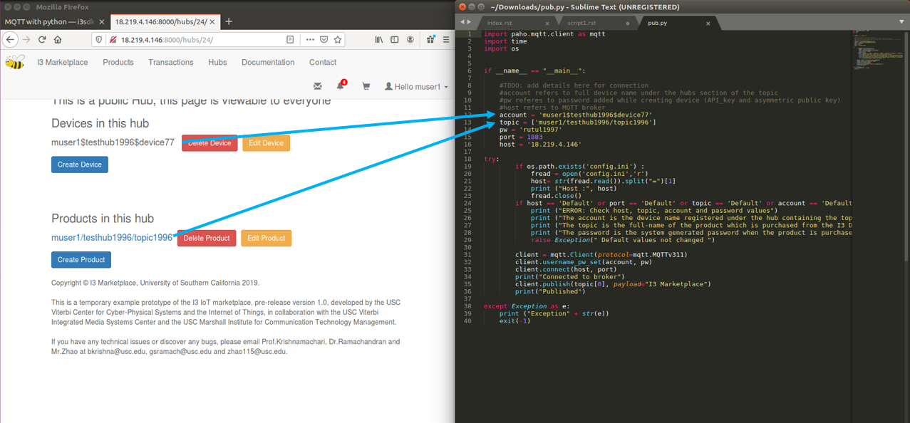
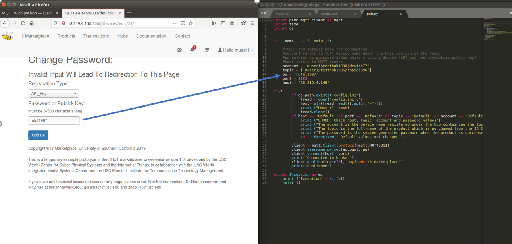

Instructions for Sellers¶
In the pub script, there’s nothing related to the seller himself. It was really the seller’s device that’s publishing, the device has a name, credential and permission. But of course, the devices are not alive, so the seller has to do everything for them.
1. MQTT username and topic name: Provide the FULL device name in connect request, also the FULL topic name. Don’t use wildcard for topic subscription. In the future we’ll allow sub-topic management, where if you buy a topic, you’ll buy all its sub-topics.
2. In mqtt connect request, provide your device password if this device is registered using api key. Note that it is the original password that you should provide, not the hashed password or something else. We’ll take care of the “de-hash” for you. Of course, we can’t know your password directly from database, but we can check if the password that you provided in publishing is indeed correct.

Input the password created while creating device. You can also update it from Edit Device

3. If your device is registered by an asymmetric key pair and you’ve provided your public key to I3, generate a Json Web Token claim and sign it with your private key (paired with the public key you provided to I3). Signature has to be performed using RS256, and right now only supports limited jwt fields. Specify an expire time for your token, after which it will be invalid for authentication. But no auto disconnection is performed when your token expires (you just can’t use this token to connect again). Directly use the token as the password for authentication.
There’s no addition information you need to provide, such as how you registered your device. We’ll take care of everything, you just need to provide the necessary basic information.
Please don’t use your private key string as the password!
If you find the above process confusing, please check how AWS uses two asymmetric key pairs to handle SSH authentications.
(You registered your virtual machine instance by providing your public key, and SSH encryption uses AWS’s public key to encrypt the message that has your private key digital signature)